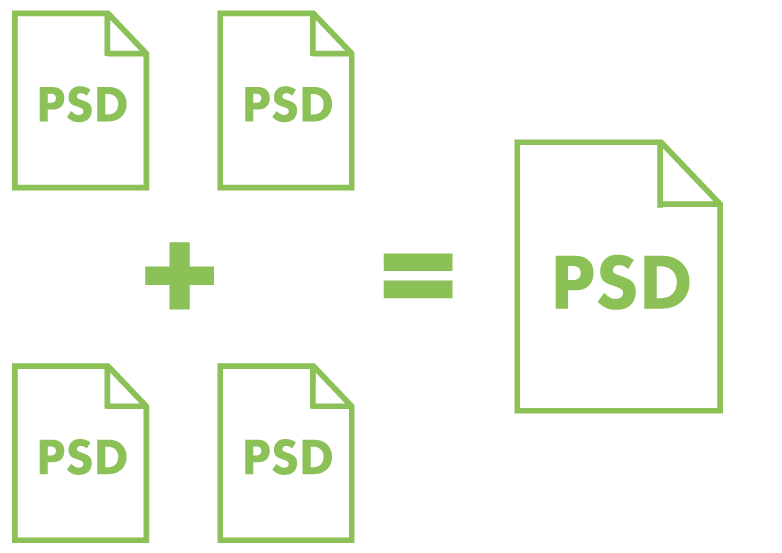
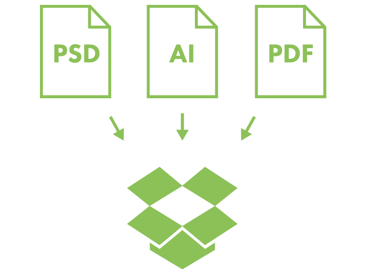
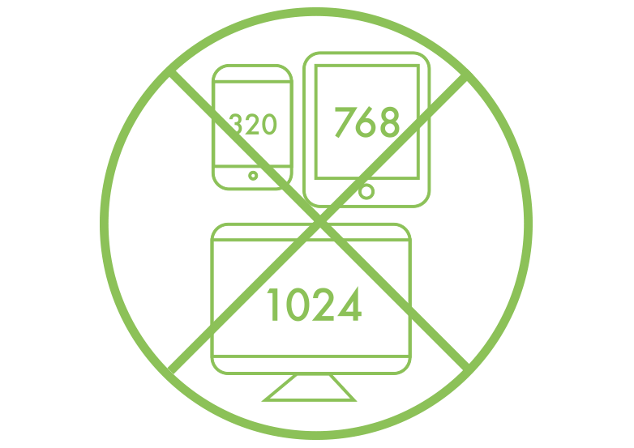

文件管理 不要忽略文件管理。如果你的项目有很多乱七八糟的文件名和各种空文件夹，那么你的作品也可能杂乱无章。 合并你的PSD 不要无限制地创建太多没用的PSD文件: 用最少的文件个数完成你的设计。i  合并你的PSD 尽量使用一个PSD文件，除非文件太大。 合理的命名文件 我是应该用"最新.psd"，"最终稿.psd"还是“最终_V2.psd”来命名？i 合理的命名你的文件 "最新.psd"，"最终稿.psd"，“最终_V2.psd”等名字绝对会导致你继续修改你的设计，所以，最好还是保持一般的文件名 把PSD和相关的切图放在同一个目录 把用到的图片或者图标文件和PSD放在同一个文件夹并命名，千万不要放到桌面上一个叫"新建文件夹"的文件夹里。i 把PSD和相关的切图放在同一个目录 其他人不需要到处找你这个文件里用到的素材在哪，节省时间且高效。不然很可能他在背后会骂娘的。 方便你的项目成员访问你的设计文件 把你的设计文件放在云端或者共享盘给其他项目成员i  方便你的项目成员访问你的设计文件 讨厌被问你的文件在哪里？直接在文件共享中同步你的工作, 这样大家就知道在找你之前会先去共享上看一下。 选择你喜欢的命名方式 选择一个规则。使用连字符或者下划线, 但不能两者兼用。不要使用空格去命名文件。 i 选择你喜欢的命名方式 按照你的命名方式, 无论你做了什么修改, 都可以帮助其他人更容易地找到想要找的文件。 不要只为某一个设备去设计 如果苹果手机的屏幕分辨率变了，那么你的设计文件就过时了。i  不要只为某一个设备去设计 与其创建与普通设备预置相一致的文档，不如让您的设计文件可变。